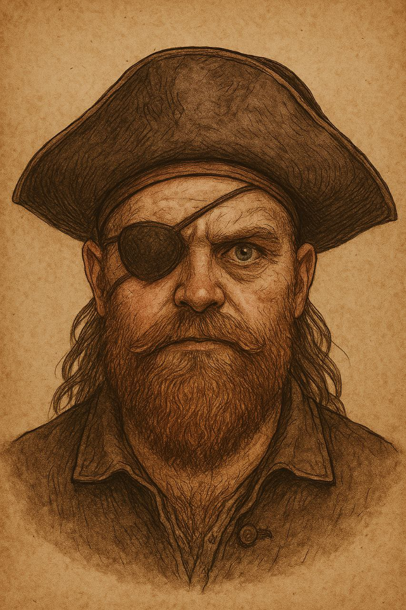
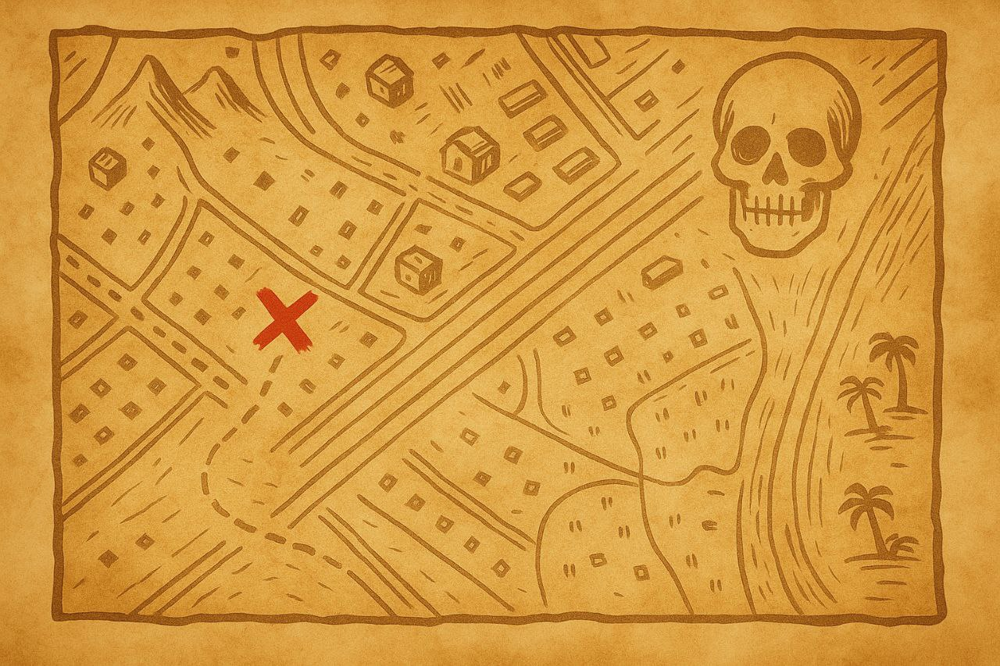

Много лет назад в водах Карибского моря правил самый безжалостный из пиратов — капитан Роджер. Его имя внушало ужас, а корабль "Бездна" был проклятием для торговцев и фрегатов.
Роджер обладал невероятным сокровищем — и, предчувствуя гибель, он спрятал его. Чтобы добраться до него, нужен древний артефакт: "Монета”.
Говорят, прилив выбросил её на берег. Теперь она у тебя. Но путь к кладу откроется только тому, кто разгадает тайны пирата и сложит слово силы...
В ту самую ночь, когда луна скрылась за тучами, и море затаило дыхание, в одном из прибрежных заливов шторм выбросил на берег потёртый кожаный тубус. Он был обвязан морской верёвкой и запечатан клеймом в виде черепа.
Внутри оказалась древняя карта, исписанная выцветшими чернилами, пахнущая солью и дымом. Линии, нарисованные от руки, вели к сокровищу, которое веками считалось утерянным. Теперь она в твоих руках.
